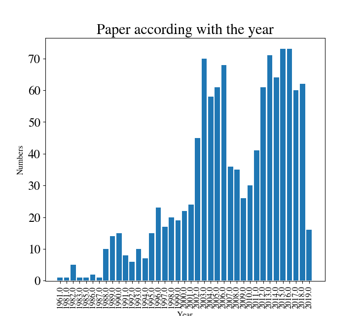
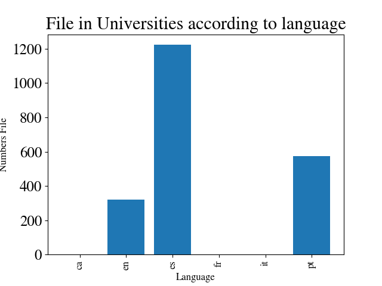
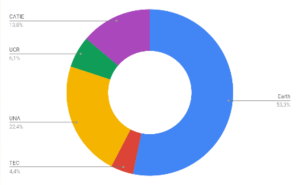
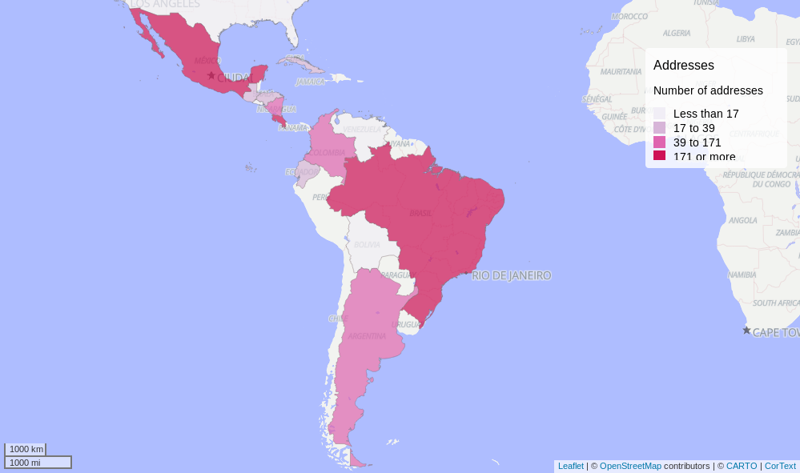
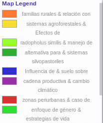
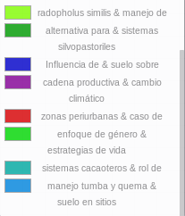
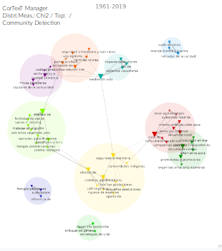
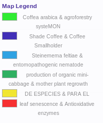
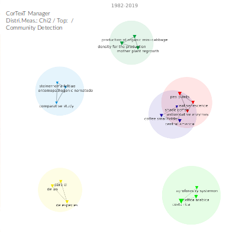

This page will show the statistics of each social media that we extract data. If you want to see the data, or recommended to made a another statitics just send me and email
Costa Rican Universities Repositorie
Articles during the years

Languages of the Articles

Quanity of Articles by Universities

Quanity of Articles by Countries
Using Name entity recognition and geomapping

Network explorer with the NER in spanish articles
Expand the map here



Network explorer with the NER in english articles
Expand the map here


If you have any comments or request of analysis, please let your message and we will contact you